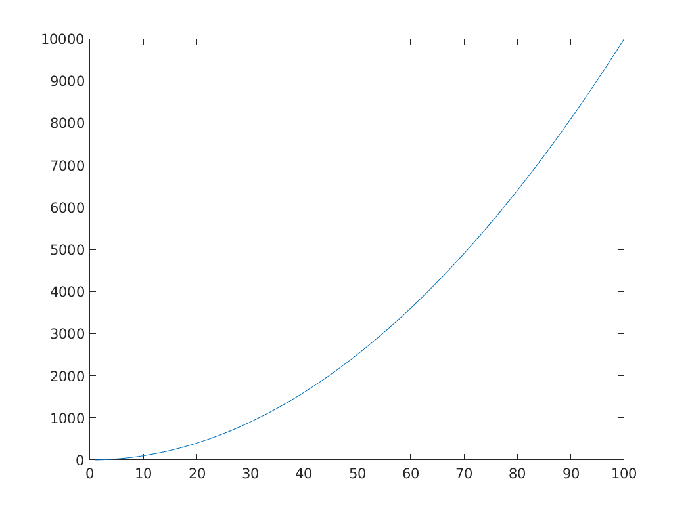
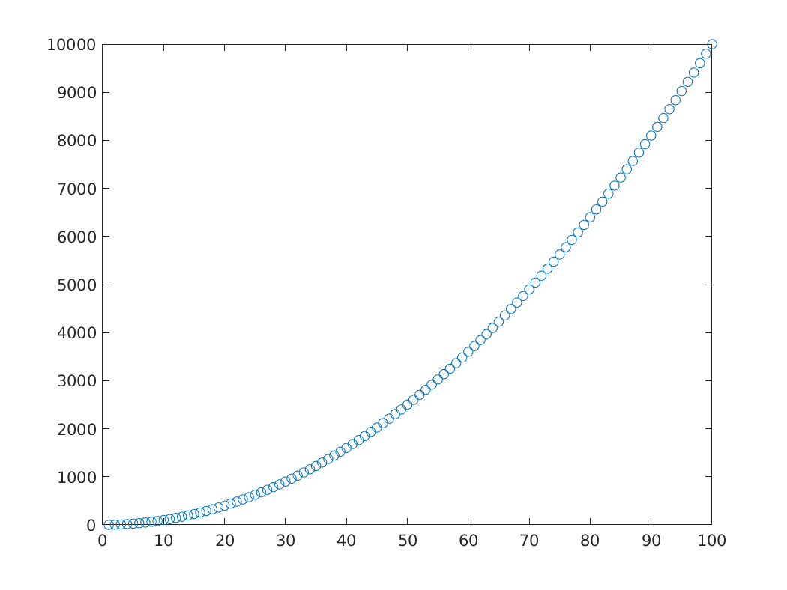
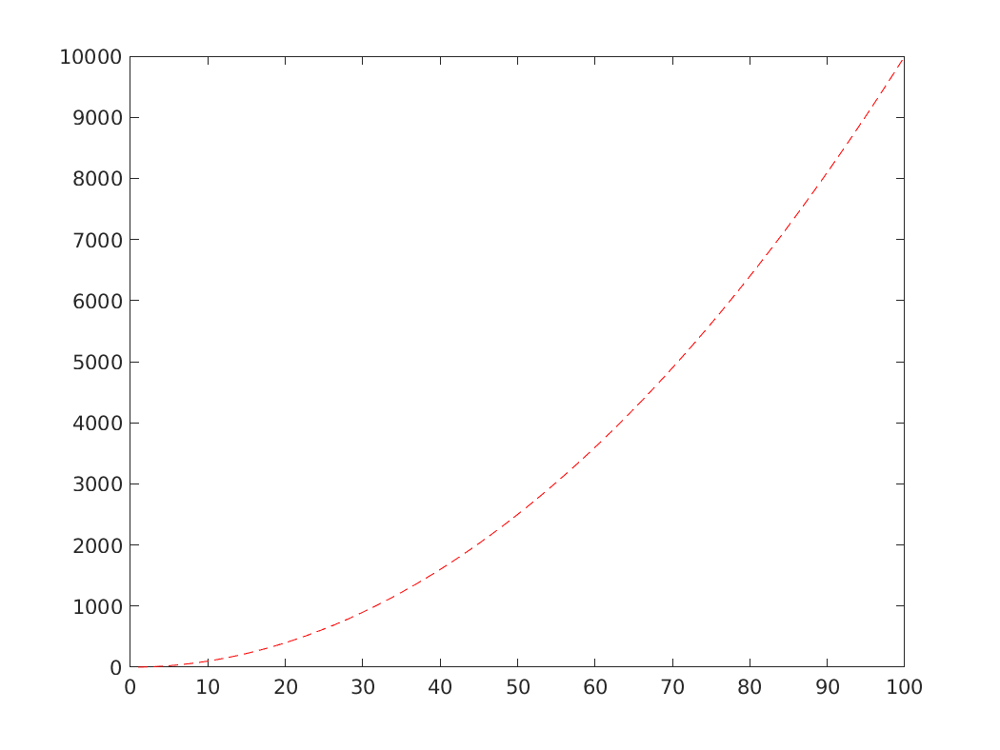
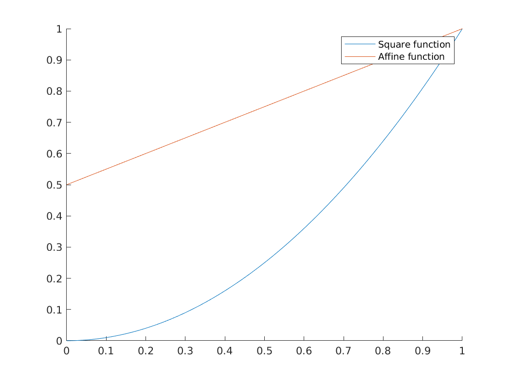
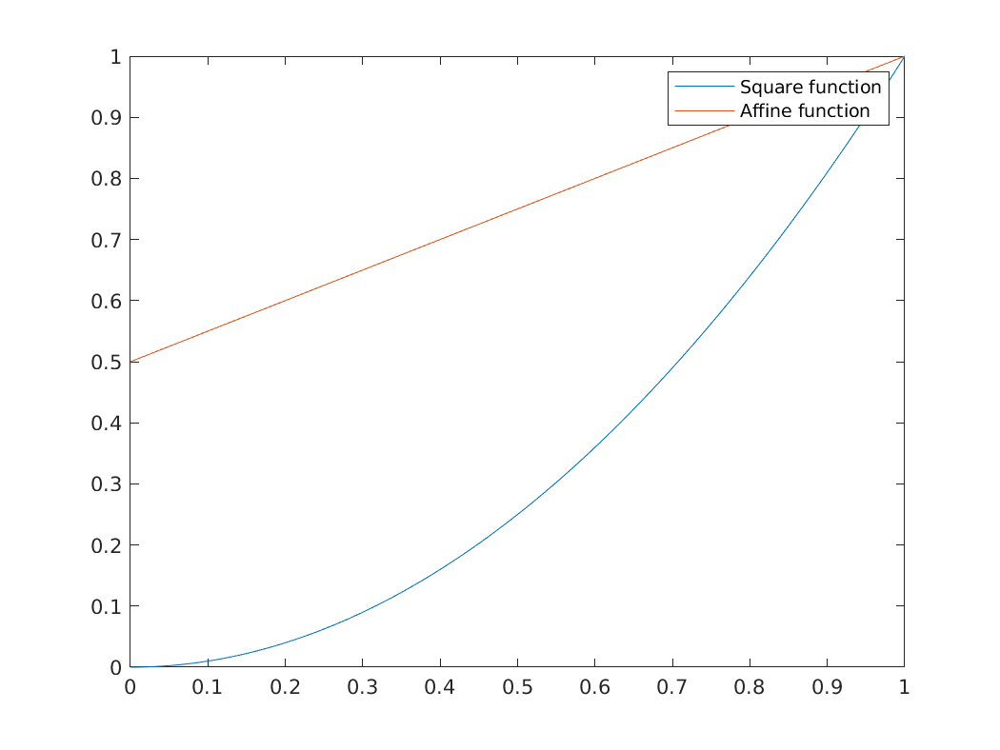
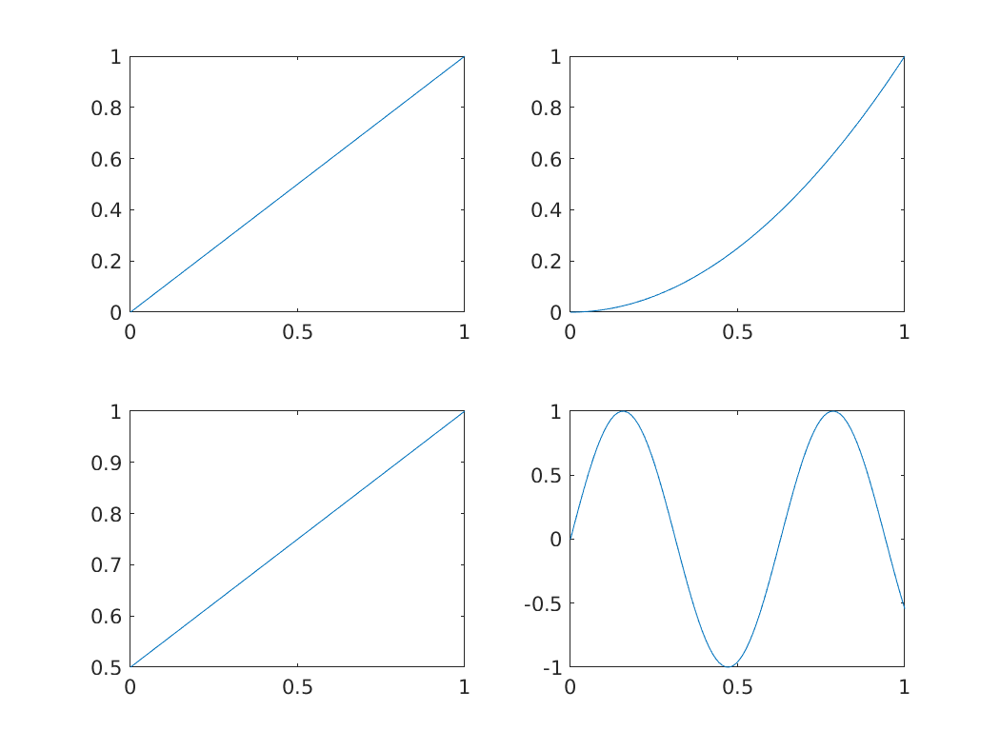
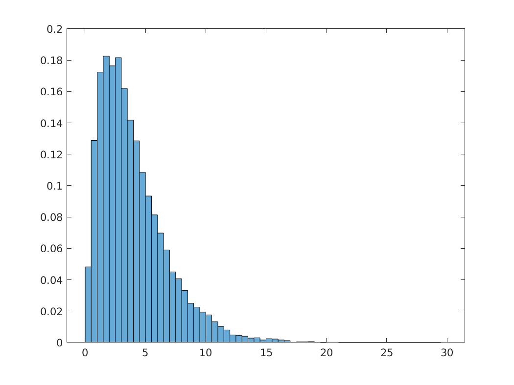
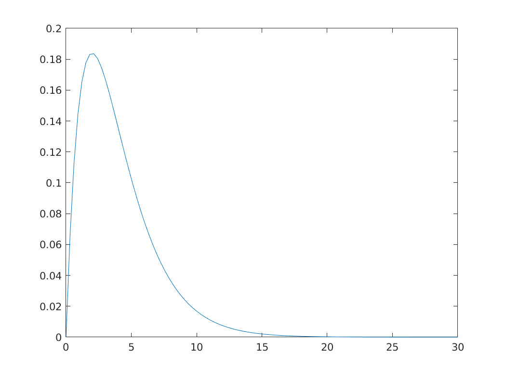
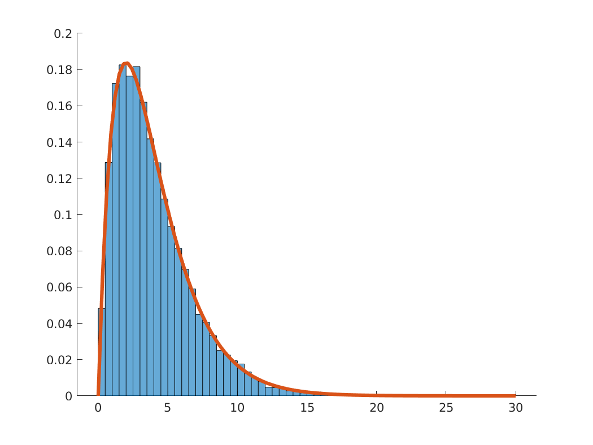

Intro to MATLAB
Table of Contents
1 About this notebook
- This file is generated by org-mode on emacs
- The way to properly see this notebook is to clone the repo on your computer and open the html file with your browser.
2 (Almost) everything is a matrix
- In MATLAB, the most common data type is a matrix of real (or more precisely, floating point) numbers.
- All the following commands create an object of the type Matrix, with floating point elements:
u = [1,2.5,3]; % Ending with semicolon suppresses output A = [1 2 3; 4 5 6]; b = 2.5; c = pi;
You can inspect dimension of the objects by applying the function
sizesize(u) size(A) size(b) size(c)
size(u) ans = 1 3 size(A) ans = 2 3 size(b) ans = 1 1 size(c) ans = 1 1- There are data types other than matrices. For example
- structs
- An object that groups sub-objects of any type.
- characters/strings
- used to store text
- tables
- as the name suggests, ; similar to
data.framein R
- For details, check out the matlab documentation on data types
2.1 Basic matrix commands
- zeros
generates a matrix of zeros of specified dimension.
zeros(2,2) zeros(3,1)
zeros(2,2) ans = 0 0 0 0 zeros(3,1) ans = 0 0 0- ones
- similar to
zeros, but with ones - diag
- if the input is a
row/column vector: creates a diagonal matrix whose main diagonal consists of those elements
diag([1,2,5])
diag([1,2,5]) ans = 1 0 0 0 2 0 0 0 5matrix: extracts the main diagonal of the matrix.
my_mat = [1, 2, 3; 4, 5, 7] diag(my_mat)
my_mat = [1, 2, 3; 4, 5, 7] my_mat = 1 2 3 4 5 7 diag(my_mat) ans = 1 5
3 Accessing elements
To access element i,j of a matrix
M, useM(i,j)M = [10 2 5; 42 1 1]; M M(2,1)
M = [10 2 5; 42 1 1]; M M = 10 2 5 42 1 1 M(2,1) ans = 42For this to work, indices must be "in bounds", i.e., if your matrix is \(n\times m\), make sure \(i \in \{1,\ldots, n\}\) and \(j \in \{1,\ldots, m\}\).
In the above example, for example
M(5,1)will give an error because the matrix has 2 rows and we're trying to access row number 5.M(5, 1)
M(5, 1) <ERRORTXT> Index in position 1 exceeds array bounds (must not exceed 2). </ERRORTXT>
4 Random numbers
- In many applications, we need to generate random numbers of a given probability distribution
- MATLAB has some built-in random number generators:
Uniform[0,1]
unif_number = rand unif_square_mat = rand(3) unif_general_mat = rand(3,5)
unif_number = rand unif_number = 0.1243 unif_square_mat = rand(3) unif_square_mat = 0.5098 0.7682 0.2184 0.4624 0.3342 0.3633 0.4578 0.9332 0.4495 unif_general_mat = rand(3,5) unif_general_mat = 0.1119 0.8431 0.3691 0.3407 0.9202 0.3258 0.0816 0.2423 0.0013 0.6533 0.0654 0.4832 0.7344 0.9989 0.3705Normal(0,1)
stdnorm_number = randn stdnorm_square_mat = randn(3) stdnorm_general_mat = randn(3,5)
stdnorm_number = randn stdnorm_number = -0.9738 stdnorm_square_mat = randn(3) stdnorm_square_mat = 0.2017 -1.6671 0.2621 -0.9835 0.7614 -2.3248 -0.2039 2.4504 -0.1851 stdnorm_general_mat = randn(3,5) stdnorm_general_mat = 1.0866 0.2903 0.9645 -0.3815 1.0375 -0.6490 1.1782 -1.6668 -0.3954 0.8048 -0.9886 0.5985 -0.0588 -1.3438 0.0001
- Importantly, every subsequent draw of a random number, within a vector or otherwise, is independent of previous draws
4.1 Seeding and reproducibility
- Note that if I type
randhere and you do the same on your computer, the output will be two different numbers - Problem: if I haven't seen you actually generate the number, how do I know it's random?
- If my results depend on simulation, I might have just made up random-looking numbers that have some desired output
To avoid that, always seed code that uses simulations.
To generate a random number generator seed, use
rng:rng(123) my_random_number = rand
rng(123) my_random_number = rand my_random_number = 0.6965will consistently output 0.6965, on anyone's computer.
4.2 Exercises
- Create a 15x1 vector where each component is drawn independent from a Uniform[0, 1] distribution
- Create a 2x2 matrix where all elements but (2,1) are independent standard normal, and entry (2,1) is uniform[0,1].
- Create a 2x2 matrix where all elements are drawn independent U[-1, 2]
- Create a 2x2 matrix where all elements are drawn independent N(1, 0.16)
- Create a vector, with arbitrary length, where each entry is one of \(\{1,2,3,4\}\) according to the probability specification (0.01, 0.09, 0.8, 0.1).
- How do you tell if the draw in (5) was reasonable?
5 Plotting
- The main plotting command for 2d plots is
plot - Examples:
Plotting the square function for integers from 1 to 100
x = 1:100; y = x.^2; figure; % Start a new plotting instance (not strictly necessary if this is the % first plot) plot(x,y);

Note how Matlab creates a line by default. You can change this with the third argument in the plot function. For example,
plot(x,y, 'o');
- That literally sets 'o' instead of a line. You can use '–' for a dashed line, '-.' for a dashed-dotted line, '+' for pluses, among other options
For setting a color, append the starting letter of a sufficiently normal color. For example, '–r' will set a red dashed line.
plot(x,y, '--r');
5.1 Comparing curves
- Let's consider the following case: we want to compare the functions \(x \mapsto x^2\) and \(x \mapsto 0.5 + x/2\)
- There are two major ways of proceeding:
Two plots side by side
This can be done by using
hold onand using theplotcommand twice:x = linspace(0, 1, 100); % Creates equally spaced range between 0 and 1 with 100 points y = x.^2; z = 0.5 + x/2; figure; hold on; plot(x,y); plot(x,z); legend('Square function', 'Affine function')

Alternatively, you can also put the y-axis vectors side by side in a matrix:
Y = [y' z']; figure; plot(x, Y); legend('Square function', 'Affine function') % Notice the order!

- Note that I took the transpose of inner vectors when defining
Ymatrix. Why?
- Note that I took the transpose of inner vectors when defining
Subplots.
As the name suggests, this technique creates multiple windows within a bigger window. The way to achieve this is with the
subplotcommand.figure; subplot(2,2,1) plot(x, x) subplot(2,2,2) plot(x, y) subplot(2,2,3) plot(x, z) subplot(2,2,4) plot(x, sin(10*x))

5.2 Example: two ways of plotting the density of a Chi2 distribution
- There are roughly two ways of plotting the density of a random variable
- If you can sample from this variable: take a very large sample and
create a histogram. The
histcommand achieves this. - If you know the expression for the density function: choose a reasonable support and plot
- If you can sample from this variable: take a very large sample and
create a histogram. The
- In this section, we'll apply it to a \(\chi^2(q)\) distribution. Let's take \(q=4\) for example.
5.2.1 Sample histogram
Remember that a \(\chi^2(q)\) is has a distribution identical to the sum of \(q\) independent standard normal random variables.
Suppose we want to sample \(4\) independent normal, N times for large N. We can use the
randncommand to find a 4xN matrix with independent normal entries:rng(123); % for reproducibility q = 4; N = 10000; sampmat = randn(q, N); % Show first 10 columns sampmat(:,1:10)
rng(123); % for reproducibility q = 4; N = 10000; sampmat = randn(q, N); % Show first 10 columns sampmat(:,1:10) ans = 0.7643 0.6680 -0.0329 -0.1337 -0.9109 0.3199 0.6204 -1.3698 -0.1307 -0.2998 -0.6050 -0.3235 -0.2951 -1.6757 -0.4629 1.0635 -0.6453 0.5432 -0.0114 1.4971 -1.0350 1.3343 -0.5548 -0.3487 0.1227 0.9011 -0.3651 -1.7078 -0.1020 1.3880 0.2014 0.6214 0.5644 0.8456 0.0900 0.2872 -0.5834 -0.0646 -0.9234 0.0054Now we can square all elements, and do row-wise sum using the function
sum:sampmat_sq = sampmat .^ 2; samp = sum(sampmat_sq, 1); samp(:, 1:10)
sampmat_sq = sampmat .^ 2; samp = sum(sampmat_sq, 1); samp(:, 1:10) ans = 2.0620 2.7175 0.7145 3.6625 1.0673 2.1279 1.2749 5.0921 0.8802 4.2579In the variable
samp, we have an independent sample of \(\chi^2(4)\)! Let's do the histogram:figure; histogram(samp, 'Normalization', 'pdf')

- Two comments on the above:
- We have to set option
'Normalization'to'pdf'to have a result that is comparable to the pdf. Without setting this,histogramdefaults to showing the number of sample points in each bin. - The default style is a bar plot but you can tweak it. Check the histogram documentation in the MATLAB page. Documentation.
- We have to set option
- Two comments on the above:
5.2.2 Using the closed form expression
From Wikipedia, the pdf of a \(\chi^2(4)\) random variable is \[ \frac{1}{2^{q/2} \Gamma(q/2) } x^{q/2 - 1} e^{-x/2} \]
I arbitrarily set the domain to [0,30] and plot 100 points.
xmax = 30; npoints = 100; q = 4; x = linspace(0, xmax, npoints); integr_const = 1/2^(q/2) * gamma(q/2); y = integr_const * x.^(q/2 - 1) .* exp(-x/2) % Why am I adding dots here? figure; plot(x, y)

5.2.3 Comparing the two
figure; hold on; histogram(samp, 'Normalization', 'pdf') plot(x, y, 'LineWidth', 3)

6 TODO Functions
- An important part of sane programming is to decompose your code in independent modules
- That is crucial for code reuse and readability
- Consider the following example. tbc